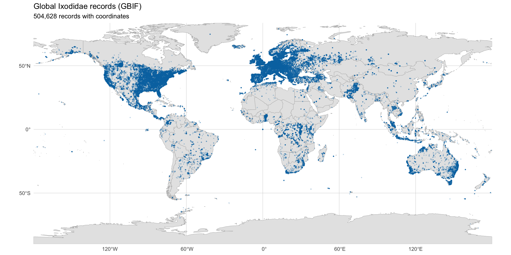
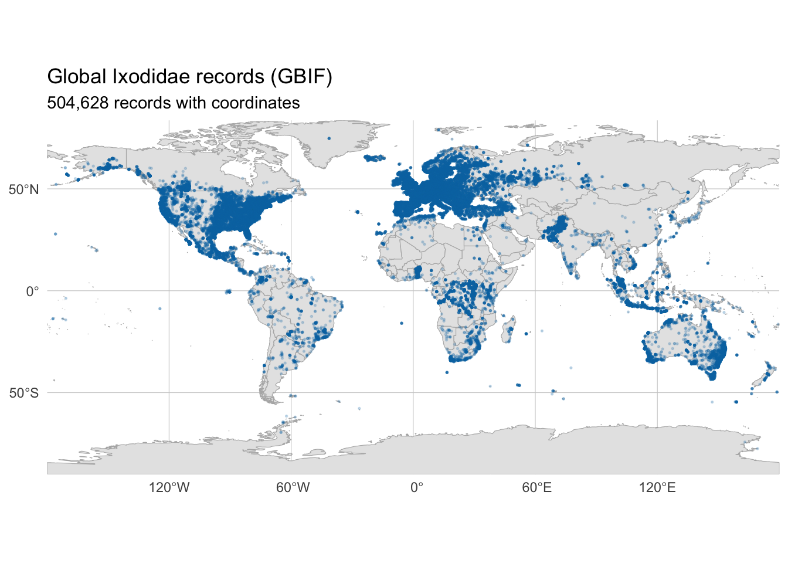
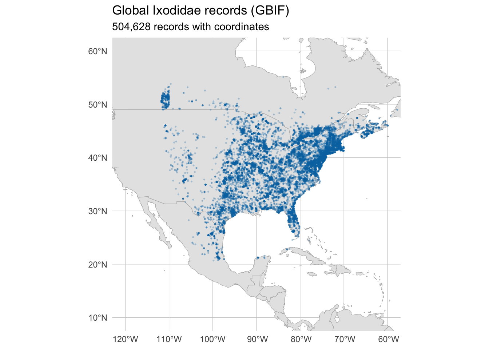
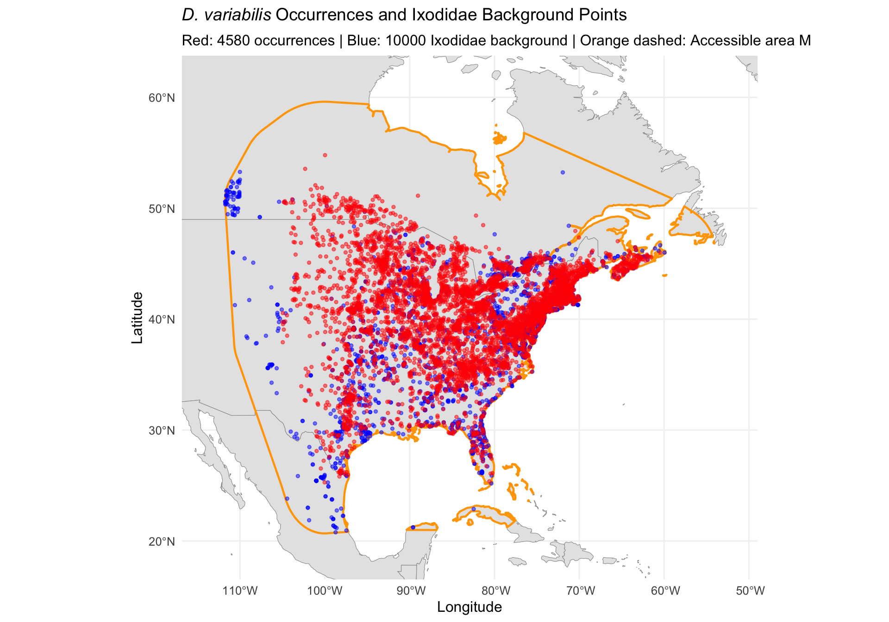
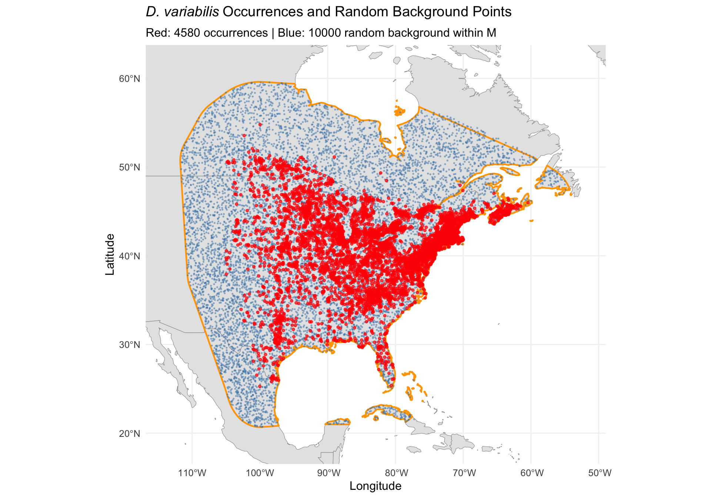

library(tidyverse)
library(terra)
library(sf)
library(rnaturalearth)
library(rnaturalearthdata)Step 2: Background Points from Ixodidae Records
Dermacentor variabilis Species Distribution Model
Overview
This script generates target-group background (pseudo-absence) points using all Ixodidae GBIF records that are NOT D. variabilis, clipped to the native range accessible area (M) of D. variabilis.
Target-group backgrounds correct for spatial sampling bias — the same collector effort patterns that produced D. variabilis records also apply to other tick species, so using Ixodidae records as background controls for this bias.
Key steps:
- Load thinned D. variabilis occurrences from Step 1
- Load Ixodidae GBIF records (~547k records)
- Define accessible area “M” as a 500 km buffered convex hull around occurrences
- Filter to records identified at minimum to genus level (remove unidentified bulk records)
- Clip Ixodidae records to M, excluding D. variabilis
- Subsample to 10,000 background points
1. Project paths
base_dir <- "~/Library/CloudStorage/OneDrive-CSIRO/OneDrive - Docs/01_Projects/SDM/Dvariabilis_SDM"
data_dir <- file.path(base_dir, "data")
processed_dir <- file.path(base_dir, "processed_data")
figures_dir <- file.path(base_dir, "figures")2. Load thinned D. variabilis occurrences
occ <- readRDS(file.path(processed_dir, "occurrences_thinned.rds"))
sprintf("Loaded %d thinned D. variabilis occurrences", nrow(occ))
# Convert to sf
occ_sf <- st_as_sf(
occ,
coords = c("decimalLongitude", "decimalLatitude"),
crs = 4326
)[1] "Loaded 4580 thinned D. variabilis occurrences"3. Define accessible area M — 500 km buffered convex hull
The accessible area represents the geographic region D. variabilis has had the opportunity to disperse to and sample from. We use a 500 km buffer around the convex hull of occurrence points, following Alkishe et al. (2020)’s buffer approach.
# Create convex hull around occurrences
occ_hull <- st_convex_hull(st_union(occ_sf))
# Buffer by 500 km (need to transform to a projected CRS for distance calculations)
# Use an equal-area projection centred on N. America
occ_hull_proj <- st_transform(occ_hull, crs = "+proj=aea +lat_1=29.5 +lat_2=45.5 +lat_0=37.5 +lon_0=-85 +datum=WGS84")
M_proj <- st_buffer(occ_hull_proj, dist = 500000) # 500 km in metres
M <- st_transform(M_proj, crs = 4326)
# Clip M to land (remove ocean areas)
world <- ne_countries(scale = "medium", returnclass = "sf") %>%
st_union()
M_land <- st_intersection(M, world)
sprintf("Accessible area M created: 500 km buffered convex hull, clipped to land")
# Save M for later use
saveRDS(M_land, file.path(processed_dir, "accessible_area_M.rds"))[1] "Accessible area M created: 500 km buffered convex hull, clipped to land"4. Load Ixodidae GBIF records
This dataset contains ~547k records of all Ixodidae ticks from GBIF.
ixod_file <- file.path(data_dir, "Ixodidae_background_points", "0023290-260208012135463.csv")
ixod_raw <- read_tsv(
ixod_file,
col_select = c(
gbifID, species, family, genus,
decimalLatitude, decimalLongitude,
countryCode, basisOfRecord, year
),
show_col_types = FALSE
)
sprintf("Loaded %d Ixodidae records", nrow(ixod_raw))[1] "Loaded 547382 Ixodidae records"world_sf <- ne_countries(scale = "medium", returnclass = "sf")
ixod_coords <- ixod_raw %>%
filter(!is.na(decimalLongitude), !is.na(decimalLatitude))
ixod_map <- ggplot() +
geom_sf(data = world_sf, fill = "grey90", colour = "grey70", linewidth = 0.2) +
geom_point(data = ixod_coords,
aes(x = decimalLongitude, y = decimalLatitude),
colour = "#0072B2", size = 0.3, alpha = 0.2) +
coord_sf(expand = FALSE) +
labs(
title = "Global Ixodidae records (GBIF)",
subtitle = sprintf("%s records with coordinates", format(nrow(ixod_coords), big.mark = ",")),
x = NULL, y = NULL
) +
theme_minimal(base_size = 11) +
theme(panel.grid = element_line(colour = "grey80", linewidth = 0.2))
ixod_map
5. Filter Ixodidae records
Remove D. variabilis records, records without coordinates, and restrict to observation-based record types.
Critical: We also remove records not identified to at least genus level. Many GBIF Ixodidae records (~80%) lack genus-level identification — these are typically bulk-digitised museum entries or low-quality citizen science records that do not represent confirmed tick observations. Retaining them would flood the background with spatially biased, taxonomically uninformative data that does not correct for sampling effort as target-group backgrounds are designed to do.
ixod_filtered <- ixod_raw %>%
# Remove records without coordinates
filter(!is.na(decimalLatitude), !is.na(decimalLongitude)) %>%
# Remove zero coordinates
filter(!(decimalLatitude == 0 & decimalLongitude == 0)) %>%
# CRITICAL: Only keep records identified to at least genus level
# Unidentified "Ixodidae" records do not represent genuine tick collection
# events and cannot correct for sampling bias
filter(!is.na(genus), genus != "") %>%
# Remove D. variabilis records (the target species)
filter(species != "Dermacentor variabilis" | is.na(species)) %>%
# Also remove D. similis (the recently split western species)
filter(species != "Dermacentor similis" | is.na(species)) %>%
# Keep observation-based records
filter(basisOfRecord %in% c(
"HUMAN_OBSERVATION", "OBSERVATION",
"MACHINE_OBSERVATION", "PRESERVED_SPECIMEN"
))
sprintf(
"After filtering Ixodidae: %d -> %d records (removed %d without genus ID)",
nrow(ixod_raw), nrow(ixod_filtered),
nrow(ixod_raw) - nrow(ixod_filtered)
)
# Top genera in filtered dataset
cat("\nTop genera in filtered dataset:\n")
ixod_filtered %>%
count(genus, sort = TRUE) %>%
head(15)[1] "After filtering Ixodidae: 547382 -> 163452 records (removed 383930 without genus ID)"
Top genera in filtered dataset:
# A tibble: 15 × 2
genus n
<chr> <int>
1 Ixodes 75641
2 Amblyomma 48617
3 Rhipicephalus 16343
4 Dermacentor 14124
5 Haemaphysalis 4000
6 Hyalomma 3936
7 Bothriocroton 623
8 Rhipicentor 50
9 Amblyoma 34
10 Boophilus 30
11 Archaeocroton 25
12 Rhipicaphalus 13
13 Margaropus 10
14 Aponomma 5
15 Nosomma 1ixod_filt_coords <- ixod_filtered %>%
filter(!is.na(decimalLongitude), !is.na(decimalLatitude))
ixod_filt_map <- ggplot() +
geom_sf(data = world_sf, fill = "grey90", colour = "grey70", linewidth = 0.2) +
geom_point(data = ixod_filt_coords,
aes(x = decimalLongitude, y = decimalLatitude),
colour = "#0072B2", size = 0.3, alpha = 0.2) +
coord_sf(expand = FALSE) +
labs(
title = "Global Ixodidae records (GBIF)",
subtitle = sprintf("%s records with coordinates", format(nrow(ixod_coords), big.mark = ",")),
x = NULL, y = NULL
) +
theme_minimal(base_size = 11) +
theme(panel.grid = element_line(colour = "grey80", linewidth = 0.2))
ixod_filt_map
6. Clip Ixodidae records to accessible area M
# Convert to sf
ixod_sf <- st_as_sf(
ixod_filtered,
coords = c("decimalLongitude", "decimalLatitude"),
crs = 4326
)
# Spatial intersection with M
ixod_in_M <- st_intersection(ixod_sf, M_land)
sprintf(
"Ixodidae records within accessible area M: %d (from %d total)",
nrow(ixod_in_M), nrow(ixod_filtered)
)
# Extract coordinates back
coords_M <- st_coordinates(ixod_in_M)
ixod_in_M_df <- ixod_in_M %>%
st_drop_geometry() %>%
mutate(
decimalLongitude = coords_M[, 1],
decimalLatitude = coords_M[, 2]
)
# Summary by genus
ixod_in_M_df %>%
count(genus, sort = TRUE) %>%
head(10)[1] "Ixodidae records within accessible area M: 75864 (from 163452 total)"
# A tibble: 8 × 2
genus n
<chr> <int>
1 Amblyomma 40454
2 Ixodes 32113
3 Haemaphysalis 1673
4 Dermacentor 807
5 Rhipicephalus 791
6 Boophilus 18
7 Rhipicaphalus 7
8 Hyalomma 1ixod_filt_clip_coords <- ixod_in_M_df %>%
filter(!is.na(decimalLongitude), !is.na(decimalLatitude))
ixod_filt_clip_map <- ggplot() +
geom_sf(data = world_sf, fill = "grey90", colour = "grey70", linewidth = 0.2) +
geom_point(data = ixod_filt_clip_coords,
aes(x = decimalLongitude, y = decimalLatitude),
colour = "#0072B2", size = 0.3, alpha = 0.2) +
coord_sf(expand = FALSE) +
labs(
title = "Global Ixodidae records (GBIF)",
subtitle = sprintf("%s records with coordinates", format(nrow(ixod_coords), big.mark = ",")),
x = NULL, y = NULL
) +
coord_sf(
xlim = c(-120, -60),
ylim = c(60, 10)
) +
theme_minimal(base_size = 11) +
theme(panel.grid = element_line(colour = "grey80", linewidth = 0.2))
ixod_filt_clip_map
7. Subsample background points
Sample up to 10,000 background points from the genus-identified Ixodidae records within M. With the genus-level filter, the pool is smaller but represents genuine tick collection events. 10,000 points is sufficient for both MaxEnt and BRT.
n_target <- 10000
set.seed(42)
if (nrow(ixod_in_M_df) >= n_target) {
bg_points <- ixod_in_M_df %>%
slice_sample(n = n_target)
sprintf("Subsampled %d background points from %d available", n_target, nrow(ixod_in_M_df))
} else {
bg_points <- ixod_in_M_df
sprintf(
"Using all %d available Ixodidae records (fewer than %d target)",
nrow(bg_points), n_target
)
}
# Create clean background coordinates dataframe
bg_coords <- bg_points %>%
select(decimalLongitude, decimalLatitude) %>%
rename(lon = decimalLongitude, lat = decimalLatitude)
sprintf("Final background dataset: %d points", nrow(bg_coords))[1] "Subsampled 10000 background points from 75864 available"
[1] "Final background dataset: 10000 points"8. Visualisation — occurrence and background points
# Convert M to plottable format
M_plot <- st_as_sf(M_land)
world_map <- ne_countries(scale = "medium", returnclass = "sf")
# Background points as sf
bg_sf <- st_as_sf(bg_coords, coords = c("lon", "lat"), crs = 4326)
# Plot extent — slightly larger than M
m_bbox <- st_bbox(M_land)
ggplot() +
geom_sf(data = world_map, fill = "grey90", colour = "grey60", linewidth = 0.2) +
geom_sf(data = M_plot, fill = NA, colour = "orange", linewidth = 0.8, linetype = "solid") +
geom_sf(data = bg_sf, colour = "blue", size = 1.0, alpha = 0.5) +
geom_sf(data = occ_sf, colour = "red", size = 1.0, alpha = 0.5) +
coord_sf(
xlim = c(m_bbox["xmin"] - 2, m_bbox["xmax"] + 2),
ylim = c(m_bbox["ymin"] - 2, m_bbox["ymax"] + 2)
) +
labs(
title = expression(italic("D. variabilis") ~ "Occurrences and Ixodidae Background Points"),
subtitle = sprintf(
"Red: %d occurrences | Blue: %d Ixodidae background | Orange dashed: Accessible area M",
nrow(occ), nrow(bg_coords)
),
x = "Longitude",
y = "Latitude"
) +
theme_minimal(base_size = 12) +
theme(
panel.grid = element_line(colour = "grey95"),
plot.title = element_text(size = 14, face = "bold")
)
ggsave(
file.path(figures_dir, "02_background_points_map.png"),
width = 10, height = 7, dpi = 300
)Second approach to generating background points
Generate 10,000 random points within the 500 km buffered convex hull (M) around known occurrence points.
set.seed(42)
n_random <- 10000
# Sample random points within M_land
random_pts_sf <- st_sample(M_land, size = n_random, type = "random")
random_pts_sf <- st_as_sf(random_pts_sf)
# Extract coordinates
random_bg_coords <- data.frame(
lon = st_coordinates(random_pts_sf)[, 1],
lat = st_coordinates(random_pts_sf)[, 2]
)
sprintf("Generated %d random background points within accessible area M", nrow(random_bg_coords))
# Map
random_bg_sf <- st_as_sf(random_bg_coords, coords = c("lon", "lat"), crs = 4326)
ggplot() +
geom_sf(data = world_map, fill = "grey90", colour = "grey60", linewidth = 0.2) +
geom_sf(data = M_plot, fill = NA, colour = "orange", linewidth = 0.8) +
geom_sf(data = random_bg_sf, colour = "steelblue", size = 0.3, alpha = 0.4) +
geom_sf(data = occ_sf, colour = "red", size = 1.0, alpha = 0.7) +
coord_sf(
xlim = c(m_bbox["xmin"] - 2, m_bbox["xmax"] + 2),
ylim = c(m_bbox["ymin"] - 2, m_bbox["ymax"] + 2)
) +
labs(
title = expression(italic("D. variabilis") ~ "Occurrences and Random Background Points"),
subtitle = sprintf(
"Red: %d occurrences | Blue: %d random background within M",
nrow(occ), nrow(random_bg_coords)
),
x = "Longitude", y = "Latitude"
) +
theme_minimal(base_size = 12) +
theme(panel.grid = element_line(colour = "grey95"))
ggsave(
file.path(figures_dir, "02_random_background_points_map.png"),
width = 10, height = 7, dpi = 300
)[1] "Generated 10000 random background points within accessible area M"9. Save outputs
# Save background coordinates
write_csv(bg_coords, file.path(processed_dir, "background_coords.csv"))
saveRDS(bg_coords, file.path(processed_dir, "background_coords.rds"))
# Save full background data with metadata
saveRDS(bg_points, file.path(processed_dir, "background_points_full.rds"))
# Save accessible area M
st_write(
st_as_sf(M_land),
file.path(processed_dir, "accessible_area_M.gpkg"),
delete_dsn = TRUE,
quiet = TRUE
)
# Save random background coordinates
write_csv(random_bg_coords, file.path(processed_dir, "background_coords_random.csv"))
saveRDS(random_bg_coords, file.path(processed_dir, "background_coords_random.rds"))
sprintf("Saved %d background points and accessible area M to processed_data/", nrow(bg_coords))[1] "Saved 10000 background points and accessible area M to processed_data/"